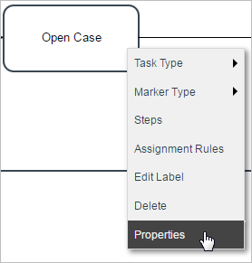
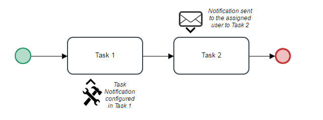
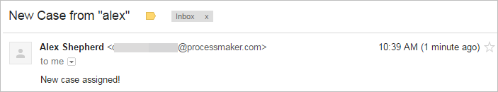
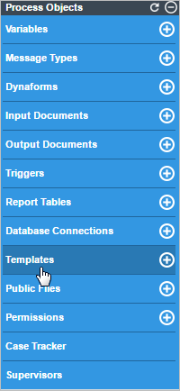
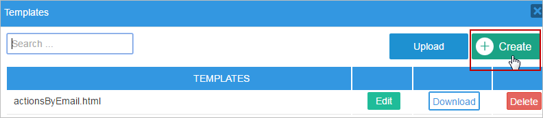
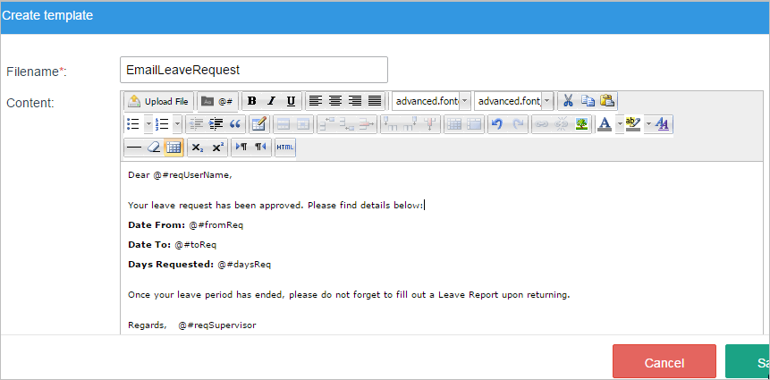
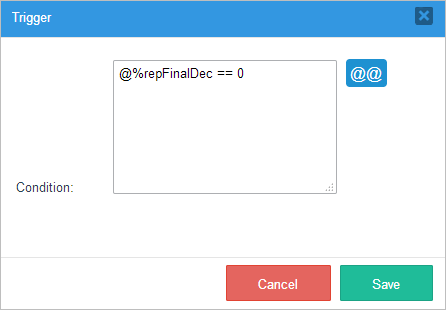
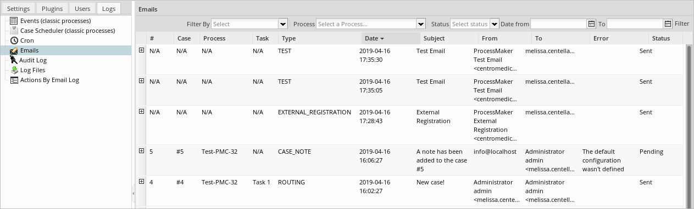
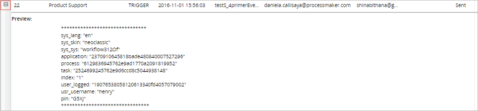
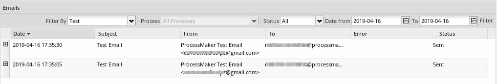

- Overview
- Task Notifications
- Message Events
- Trigger Messages
- Create the HTML Email Template
- Sending Emails with PMFSendMessage() or PMFSendMessageToGroup()
- Assigning the Trigger to Step(s)
- Trigger Message Examples
- Emailing the Current Assigned User of a Case
- Emailing the Supervisor of a Case's Assigned User
- Emailing the Previous User of a Case
- Emailing the Previous User with a Database Query
- Emailing the Next Assigned User
- Emailing the Next Assigned Users of Parallel Tasks
- Emailing all Assigned Users of a Task
- Emailing All Assigned Users of the Next Task(s)
- Emailing all Participants in a Case
- Emailing Members of a Department
- Emailing Members of a Group
- Emailing Users with a Role
- Emailing when Cases are Canceled/Paused/Reassigned
- Debugging Email Notifications
- Check the PMFSendMessage() or PMFSendMessageToGroup() Return Value
- Check the APP_MESSAGE Table
- Check the Output of cron.php
- Log Module to Manage Notifications
Overview
Notifications can be used to keep users apprised of new cases in their inbox and notify them at specified times while running cases. In ProcessMaker, all notifications are sent to users via email, which is why it is important to enter a valid email address for each user and properly configure ProcessMaker to connect to an email server to sent out notifications.
There are three types of notifications:
- Task Notifications, which are sent when a user is designated to work on a task in a case.
- Message Events, which are sent at specified times based on when tasks (or groups of tasks) begin in a case.
- Trigger Messages, which are sent out using the PMFSendMessage() and PMFSendMessageToGroup() function.
The subject line and body of these email notifications can be customized, and system variables and case variables can be inserted to personalize the email for the recipient using data from the current case.
The content of Task Notifications is in plain text, which is defined in the Task Properties. In contrast, the content of Message Events and Trigger Messages is specified inside a template file, which permits the use of HTML formatting. The template file can be created using ProcessMaker's template editor or uploaded after being created in an external HTML editor, such as FrontPage, DreamWeaver or BlueGriffon.
Note: Emails are sent to the configured email server when cron.php is executed, so the ProcessMaker server needs to be configured to execute a cron job in Linux/UNIX or a Scheduled Task in Windows.
Task Notifications
Note: Take into consideration that in cases where the next task of the process routes to a sub-process, the case number in the Task Notifications will be the case number of the master process.
Task Notifications are useful for keeping users apprised when they have been assigned to work on a task in a case.
To create a message to be sent to an assigned user, go to the Designer menu and open a process for editing. In the process map, right click on the task that should send out notifications when users are assigned to work on the task when running cases. In the dropdown menu that appears, select the Properties option.

Go to the Notifications tab and select to notify either the assigned user of the current task or the next user.

- After routing notify the next assigned user(s): This option was included in previous ProcessMaker versions; the process locates the next task and sends the notification to the assigned user.

- Notify the assigned user to this task: The process will send the notification to the assigned user of the current task when the configured task is assigned to them. This option is useful when the process design has script tasks, loops or gateways and it is difficult to determine the next assigned user. Notice that when this option is configured in the first task of a process, the notification will not be sent unless there is a loop returning to the first task.

Note that both checkboxes can be selected. In that case, two notifications will be sent in different moments.
The notification configuration in both cases are the same:

- Email Account: As of ProcessMaker 3.3.0, the dropdown lists the Default email account and Sender Email of all the accounts configured in the email servers of the workspace. Otherwise, the Sender Account value replaces Sender Email if it is empty when the email engine is SMTP (PHP Mailer) or "Mail (PHP)" replaces Sender Email when the email engine is Mail (PHP). See this documentation to learn more about Sender Email, Sender Account, SMTP and Mail. Notifications will be sent using the selected email account.
- Sender Name: Displays the options "Previous User" and "Email Sender Name".
- Previous User: This option sends the email notification to the email account selected in the Email Account field using the name of the user who completed the previous task in the title of the email.
 - Email Sender Name: This option sends the email notification using the Sender Email and Sender Name values defined in the email server configuration of the email selected in the Email Account field.

Note that some mail servers don't allow the Sender Email value to be different from the Sender Account (real email account). In this case, the notification will be sent using the email account selected in the Email Account field.
- Previous User: This option sends the email notification to the email account selected in the Email Account field using the name of the user who completed the previous task in the title of the email.
- Subject: The subject of the email message. System variables and case variables can be used in the subject of the email message by clicking the @@ button.
- Content Type:
- For a simple message without formatting, choose the Plain Text option. Enter text into the Message box. Case variables can be inserted too.
- For more control over the formatting, select the HTML Template option. Then, select the name of the template file to be used for the body of the email message. To create template files, see Templates.

- For a simple message without formatting, choose the Plain Text option. Enter text into the Message box. Case variables can be inserted too.
When done defining the Task Notification, click on Save.
Note: A Task Notification cannot be sent to a Script Task because it doesn't have an assigned user, which is required for a Task Notification to be sent.
Inserting Variables
To insert a variable into the email, click on the [@@] button and select the variable to insert. @@variable will insert the variable enclosed in double quotation marks, whereas @#variable inserts the variable without quotation marks. Make sure that all variables used in the message have already been created at some earlier point in the process. System variables (such as @@USR_USERNAME and @@APPLICATION) are automatically created and case variables are created in Dynaform fields or defined in triggers.
When a field in a Dynaform is submitted, ProcessMaker stores both a @@variable and @@variable_label for the field, and either variable can be used in the email template. @@variable is the value that is stored internally by ProcessMaker and @@variable_label is the text displayed to the user:
- For textboxes and textareas, there is no difference between
@@variableand@@variable_label.Note: In order to display line breaks from textareas in email notifications, create the following trigger:
Set this trigger to execute before the point in the process when the email is sent. Then, insert the variable@#myTextAreaHtmlin the notification template - For dropdown boxes and radio buttons, the value of
@@variableis the value/key of the selected option and@@variable_labelis the displayed text of the selected option. These are defined either in the field's options property or by the first and second fields returned by the sql query. - A checkbox (which is not in a grid) has a value of
["1"]if marked or["0"]if unmarked, so it can't be used directly in a template because it is an array. Instead, use@@variable_label, which by default is "true" if marked and "false" if unmarked; however, these values can be changed. If a checkbox is inside a grid, then its@@variableis set to "1" if marked or "0" if unmarked, which are strings that can be used in templates. - For datetime fields,
@@variableis the datetime in "YYYY-MM-DD HH:MM:SS" format, such as "2016-02-25 16:03:59". In contrast,@@variable_labelis the datetime configured by the field's format property. For example, if the format is "MMMM Do, YYYY", then it would be "February 2nd, 2016". - For checkgroup fields,
@@variableis["option1", "option2", ...], such as["accounting","landscaping","cleaning"], which is an array and therefore cannot be inserted into templates. Instead, use@@variable_label, which is a string in the form "["Option 1","Option 2",...]", such as "["Accounting","Landscaping","Cleaning and janitorial"]".
Note: For prettier formatting, create a string variable and a trigger that is executed beforehand that stores the selected options in separate lines in the string variable. The json_decode() function can be used to convert@@variable_labelinto an array. For example, the following trigger can be used for a checkgroup whose variable is named "selectServices":Then, insert@@selectServicesFormatted = '';
$aOptions = json_decode(@@selectServices_label);
foreach ($aOptions as $option) {
@@selectServicesFormatted .= $option . "<br>\n";
}@#selectServicesFormattedinto the template. - For file fields,
@@variable_labelhas the fil ename of the selected file in a JSON array, such as "["employeePhoto.jpg"]" or "[]" if no file was selected.@@variableis "["file-uid"]", such as "["file-uid"]", "["263247890574cd24044f980079517567"]" or "[]" if there is no selected file.
Note: To select the file name without the enclosing brackets, create a string variable and a trigger that is executed beforehand that stores the filename in the string variable. The json_decode() function can be used to convert@@variable_labelinto an array. For example, the following trigger can be used for a file field whose variable is named "invoiceFile":Then, insert@@invoiceFilename = '';
$aFilenames = json_decode(@@invoiceFile_label);
if (count($aFilenames) > 0) {
@@invoiceFilename = $aFilenames[0];
}@#invoiceFilenameinto the template. - For grids, there is no
@@variable_labelvariable. See below.
Note: If a case variable doesn't exist, the message will be sent out with the name of the variable in the text. Case variables will not be created if a DynaForm is not submitted, or the process has a condition that evaluates to false so the DynaForm is skipped in the case. To avoid variable names appearing in messages, fire a trigger after the Dynaform to check whether the variable has been set. If not, set the variable to an empty string, so that any subsequent notifications will insert a blank space in place of the variable name:
Message Events
Message events can be used to send out messages at specified times. For more information, see Events.
Trigger Messages
Email notifications can be sent out in triggers using the PMFSendMessage() and PMFSendMessageToGroup() function. Sending out messages in Triggers provides a great deal of flexibility, since the parameters for the PMFSendMessage() function allow the sender, the list of recipients, the subject line, the template file and even customized insertion variables to be specified. In addition, the message can be sent based on the conditions of the particular case, and a condition can be set for the firing of the trigger, or the PMFSendMessage() function can be wrapped inside an if clause in the trigger code.
To configure the notification, the following steps are necessary:
- Create the HTML email template
- Create a trigger containing the PMFSendMessage() or PMFSendMessageToGroup() function
- Assign the trigger to a step in the process.
Create the HTML Email Template
Email template files can be created inside ProcessMaker with the WYSIWYG editor in the Templates option in the Main Toolbox. For greater creativity, create the template file with an external plain text editor or HTML editor and then upload it to ProcessMaker.
Open a process for editing. Click on the Template option in the main toolbox.

Then click on either the Create or Upload links to create or upload the template file.

The template file will determine the body of the email message. This text can contain system and case variables and HTML tags. For more information on the format of template files, see Output Documents.
For example, the following template is used when a leave request is approved:
Your leave request has been approved. Please find details below:
Date From: @#fromReq
Date To: @#toReq
Days Requested: @#daysReq
Once your leave period has ended, please do not forget to fill out a Leave Report upon returning.
Regards,
@#reqSupervisor

Its HTML code can be edited by clicking on the button in the editor to see the following HTML code:
<html>
<head>
</head>
<body>
<p>Dear @#reqUserName, <br>
Your leave request has been approved. Please find details below: <br>
<b>Date From:</b> @#fromReq <br>
<b>Date To:</b> @#toReq <br>
<b>Days Requested:</b> @#daysReq <br>
<br>
Once your leave period has ended, please do not forget to fill out a Leave Report upon returning. <br><br>
Regards, <br>
@#reqSupervisor</p>
</body>
</html>
Links to Cases in Templates
The email template can also contain links to access resources inside ProcessMaker. To learn more about web browser redirection inside ProcessMaker, see JavaScript Frames, the G::header() function and the Link field.
An email template can include a link to open a case with a click of the mouse. Links to the current case can be constructed using system variables. For example, to open a link to the current case:
Dear @#reqUserName,
Your leave request has not yet been approved. Please find the details below:
Date From: @#fromReq
Date To: @#toReq
Days Requested: @#daysReq
We need you to fill in some details. Please click the link below:
http://example.com/sys@#SYS_SYS/@#SYS_LANG/@#SYS_SKIN/cases/open?APP_UID=@#APPLICATION&DEL_INDEX=@#INDEX&action=draft
Regards, @#reqSupervisor
Its HTML code can be edited by clicking on the button in the editor to see the following HTML code:
<html>
<head>
</head>
<body>
<p>Dear @#reqUserName, <br>
Your leave request has been approved. Please find details below:</p>
<table>
<tr><td><b>Date From:</b> </td><td>@#fromReq</td></tr>
<tr><td><b>Date To:</b> </td><td>@#toReq </td></tr>
<tr><td><b>Days Requested:</b></td><td>@#daysReq</td></tr>
</table>
<p>We need you to fill in some details. Please click the link below:<br>
<a href="http://example.com/sys@#SYS_SYS/@#SYS_LANG/@#SYS_SKIN/cases/open?APP_UID=@#APPLICATION&DEL_INDEX=@#INDEX&action=draft">http://example.com/sys@#SYS_SYS/@#SYS_LANG/@#SYS_SKIN/cases/open?APP_UID=@#APPLICATION&DEL_INDEX=@#INDEX&action=draft</a></p>
<p>Regards, <br>
@#reqSupervisor</p>
</body>
</html>
Remember that the person receiving the email needs to either be assigned to work on the current task in the case or have process permissions to open the case. If opening a case as a Process Supervisor, a different URL can be used:
http://example.com/sys@#SYS_SYS/@#SYS_LANG/@#SYS_SKIN/cases/open?APP_UID=@#APPLICATION&DEL_INDEX=@#INDEX&to_revise=true&action=to_revise
If the case is completed, paused or canceled, or the user doesn't have rights to open the case, then the summary for the case will be displayed. The summary can also be displayed by setting action=sent; it is not necessary to include the delegation index number in the URL:
http://example.com/sys@#SYS_SYS/@#SYS_LANG/@#SYS_SKIN/cases/open?APP_UID=@#APPLICATION&action=sent
If the user doesn't currently have an active login session in ProcessMaker, the web browser will first redirect to the login page and then redirect to the specified case after logging in. If the case is opened in a task that has already been completed, then the web browser will redirect to the list of cases in the inbox.
Redirecting to the ../cases/main Page
Unfortunately, the page "cases/open?..." is designed to open a case inside an <iframe> below the main menu bar, so redirecting the web browser to this address will open a window that doesn't have the main menu bar and the Home sidebar. To be able to get back to the principal page after completing the task, it is recommended to add the following trigger to the process that redirects the web browser back to the "../cases/main" page:
Set the above trigger to execute after routing in the task specified by the "cases/open?..." page. When the user completes working on the task and clicks on the Continue button at the end of the task, the web browser will automatically be redirected to the "../cases/main" page, which displays the top-level menu, the Home sidebar and the list of cases in the inbox.
If the user needs to be able to immediately return to the "../cases/main" page, a button that redirects to that page can be added to the Dynaform.
For example, if a button is added with the ID "goToInbox", then the following JavaScript code can be added to the Dynaform to save the contents of the Dynaform and redirect the web browser:
$("form").saveForm();
top.location.href = "../cases/main";
});
Grids in Templates
The email template can also contain grid data. For example, the grid can be placed inside an HTML table:
| Date From | Date To | Number Days | Comment |
|---|---|---|---|
| @#detDateFrom | @#detDateTo | @#detNoDays | @#detComment |
Regards, @#reqSupervisor
Its HTML code would be:
<html>
<head>
</head>
<body>
Dear @#reqUserName, <br>
Your leave request has been approved. Please find details below: <br>
<table>
<tr><th>Date From</th><th>Date To</th><th>Number Days</th><th>Comment</th></tr>
<!-- @>reqLeaveGrid -->
<tr><td>@#detDateFrom</td><td>@#detDateTo</td><td>@#detNoDays</td><td>@#detComment</td></tr>
<!-- @<reqLeaveGrid -->
</table>
<p>Once your leave period has ended, please do not forget to fill out a Leave Report upon returning. <br><br>
Regards, <br>
@#reqSupervisor</p>
</body>
</html>
For each row in the grid between @>reqLeaveGrid and @<reqLeaveGrid, the grid fields @#detDateFrom, @#detDateTo, @#detNoDays, and @#detComment will be repeated on a new line. For more information on inserting grids into templates, see Grids in Output Documents.
Moreover, it is possible to introduce images inside the template by editing the HTML code. For example:
<img src="http://example.com/companyLogo.jpg">
Images inserted in email templates should be hosted in a server with public access, otherwise they might not be viewable by the person receiving the email. For example, the corporate logo placed in the location INSTALL-DIRECTORY/workflow/public_html/companyLogo.jpg on the ProcessMaker server is publicly accessible at the address: http://example.com/companyLogo.jpg
Sending Emails with PMFSendMessage() or PMFSendMessageToGroup()
The PMFSendMessage() or PMFSendMessageToGroup() functions are used to send out customized email notifications based on a template file. To use this function, create a Trigger and add this function to the code for that trigger. For more information and code examples, see the documentation for the PMFSendMessage() or PMFSendMessageToGroup() function. Also see the code examples below.
To find which users are assigned to cases, tasks, groups, departments, roles, etc., it is often necessary to use lookup information in the database using the executeQuery() function. Then, the email address of those users can be found with the userInfo() function. Emails can be sent to multiple recipients with the PMFSendMessage() function by separating the email addresses with commas (,) in the $to, $cc or $bcc parameters. Emails can also be sent to a users group with the PMFSendMessageToGroup() function.
Assigning the Trigger to Step(s)
Once you have uploaded your template email file and defined a trigger to send the email, it is possible to assign the related trigger to steps in different instances:
- Before/after a step (DynaForm, Input Document or Output Document) is displayed.
- Before the case assigns a user to the next task in the case.
- Before/after a case is routed to the next task in the case.
In each instance, it is also possible to define conditions that dictate whether a trigger should be executed or not. If the condition evaluates to false, the trigger will not be fired. If it evaluates to true, the trigger will be fired.
For example, the following condition defines that the trigger will be executed only if the @@repFinalDec case variable is 0. In other words, the notification will be sent only when this condition is true.

Trigger Message Examples
Emailing the Current Assigned User of a Case
A message can be sent to the user currently assigned to work on the case by using the @@USER_LOGGED system variable to get that user's unique ID. Then, pass that unique ID to the userInfo() function to look up his/her email address. For example:
$to = $aUser['mail'];
PMFSendMessage(@@APPLICATION, 'boss@example.com', $to, '', '', 'Some Message Title', 'someTemplate.html');
Emailing the Supervisor of a Case's Assigned User
To send a message to the supervisor of the current assigned user for a case, first use the InternaCases::loadCase() to look up who is currently assigned to work on the case and then use the Users::Load() method to get that user's supervisor. Finally, use userInfo() to get the supervisor's email.
For example, to email the supervisor of the user assigned to the current case when the case is overdue:
$c = new Cases();
$aCase = $c->loadCase(@@APPLICATION, @%INDEX);
$u = new Users();
$aUser = $u->Load($aCase['CURRENT_USER_UID']);
if (!empty($aUser['USR_REPORTS_TO'])) {
$aSupervisor = userInfo($aUser['USR_REPORTS_TO']);
PMFSendMessage(@@APPLICATION, 'admin@example.com', $aSupervisor['mail'], $aUser['USR_EMAIL'],
'', 'Case is Overdue', 'overdueTemplate.html');
}
else {
@@ERROR = "There is no supervisor for user {$aCase['CURRENT_USER']}.";
$g = new G();
$g->SendMessageText(@@ERROR, "ERROR");
}
Emailing the Previous User of a Case
To send a message to a user who worked on a previous task in the case, create a trigger that fires during that previous task which saves the user's unique ID to a case variable.
For example, in a process to approve purchase requests, an email message needs to be sent to the purchase requester, informing him/her whether the purchase was approved or disapproved. In the first task when the requester fills out the purchase request form, fire the following trigger:
In the subsequent task, when the manager decides to approve or disapprove the purchase request, fire the following trigger to send an email to the requester:
if (isset(@@requesterId) and !empty(@@requesterId)) {
$aUserTo = userInfo(@@requesterId);
$aUserFrom = userInfo(@@USER_LOGGED);
PMFSendMessage(@@APPLICATION, $aUserFrom['mail'], $aUserTo['mail], '', '', 'Purchase Request Decision',
'purchaseDecision.html');
}
Emailing the Previous User with a Database Query
Another way to find the user who worked on a previous task in a case is to look up the record for that task in the wf_<WORKSPACE>.APP_DELEGATION table. There is a record for each task in a case with the last user to work on that task. First, look up the unique ID for the task with the taskList() web service at ADMIN > Settings > Web Services Test (or look it up in the wf_<WORKSPACE>.TASK.TAS_UID field in the database). Then, use executeQuery() in a trigger to look up the user who worked on a particular task for the case in the wf_<WORKSPACE>.APP_DELEGATION.USR_UID field.
For example, to send a message to a user who worked on a task with the ID "7710617204e67abaabfb1c9082177702" in the current case:
$caseId = @@APPLICATION;
$query = "SELECT USR_UID FROM APP_DELEGATION WHERE APP_UID='$caseId' AND TAS_UID='$taskId'";
$tasks = executeQuery($query);
if (is_array($tasks) and count($tasks) > 0) {
//get the last record, in case the task was repeated in the case
$userId = $tasks[count($tasks)]['USR_UID'];
$aUser = userInfo($userId);
PMFSendMessage(@@APPLICATION, 'boss@example.com', $aUser['mail'], '', '', 'Some Message Title', 'someTemplate.html');
}
Emailing the Next Assigned User
An email can be sent out to the user assigned to work on the next task in two ways:
- Using the PMFGetNextAssignedUser() function for tasks with Cyclical Assignment.
- Looking up the next user in the APP_DELEGATION table after routing from the previous task.
The second way is more reliable and works with any type of assignment rule.
For Next Tasks with Cyclical Assignment
If the next task uses cyclical assignment, the next assigned user in a case can be looked up using the PMFGetNextAssignedUser() function. The parameters of this function require the unique IDs for the case and the task, which can be looked up with taskList() at ADMIN > Settings > Web Services Test or by querying the wf_<WORKFLOW>.TASK.TAS_UID field in the database.
For example, the following trigger sends an email message to the next user who will be assigned to work on the current case.
$aUser = PMFGetNextAssignedUser(@@APPLICATION, $taskId);
if (is_array($aUser) and count($aUser) > 0) {
PMFSendMessage(@@APPLICATION, "Mr. Boss <boss@example.com>", $aUser['USR_EMAIL'], '', '',
'You are assigned to next task', 'template.html');
}
else {
$g = new G();
$g->SendMessageText("Unable to lookup next assigned user!", "ERROR");
}
Remember that the PMFGetNextAssignedUser() function only works if the next task uses cyclical assignment. If the next task uses any other type of assignment rule, it is necessary to use the following method.
For Next Tasks with Any Type of Assignment Rule
The assigned user in the next task can be looked up in the wf_<WORKSPACE>.APP_DELEGATION.USR_UID field in the database with a trigger that fires after routing from the previous task. At that point, the next task has already been created in the database, although the case is still in the previous task. This method works for tasks with any type of assignment rule.
For example, the following trigger sends an email message to the next user who will be assigned to work on the current case.
$nextTaskId = '67156450657e5b7bc47c393009386672';
$caseId = @@APPLICATION;
//lookup the user assigned to the next task in the case
$query = "SELECT USR_UID FROM APP_DELEGATION WHERE APP_UID='$caseId' AND
DEL_INDEX=( SELECT MAX(DEL_INDEX) FROM APP_DELEGATION WHERE APP_UID='$caseId'
AND TASK_UID='$nextTaskId' )";
$result = executeQuery($query) or
die("Error in query: $query");
$aUser = userInfo($result[1]['USR_UID']);
$to = $aUser['firstname'] .' '. $aUser['lastname'] .' <'. $aUser['mail'] .'>';
PMFSendMessage(@@APPLICATION, "Mr. Boss <boss@example.com>", $to, '', '',
'You are assigned to next task', 'template.html');
Emailing the Next Assigned Users of Parallel Tasks
The previous code example will have problems if the next tasks are parallel tasks, because their index numbers might not be the maximum index number. In that case, search for particular task IDs in the wf_<WORKSPACE>.APP_DELEGATION.TAS_UID field in the database. Task IDs can be found with taskList() at ADMIN > Settings > Web Services Test or by querying the wf_<WORKFLOW>.TASK.TAS_UID field in the database.
For example, the following trigger code set to fire after routing in the previous task will look up the next tasks in the process, which are three parallel tasks with the unique IDs "8494848774f28459638eb76005941643", "3466222164f2951faaf2915011308833" and "2935650394f297698b78467062625755":
//lookup the user assigned to the next task in the case
$query = "SELECT USR_UID FROM APP_DELEGATION WHERE APP_UID='$caseId' AND DEL_THREAD_STATUS='OPEN' AND
(TAS_UID='8494848774f28459638eb76005941643' OR '3466222164f2951faaf2915011308833'
OR '2935650394f297698b78467062625755')";
$aUsers = executeQuery($query) or die("Error executing query: \n$query");
if (is_array($aUsers) and count($aUsers) > 0) {
$to = '';
foreach ($aUsers as $aUser) {
$aInfo = userInfo($aUser['USR_UID']);
$to .= ($to == '' ? '' : ', ') . $aInfo['mail'];
}
PMFSendMessage(@@APPLICATION, "Mr. Boss <boss@example.com>", $to, '', '',
'You are assigned to the next tasks', 'template.html');
}
Emailing all Assigned Users of a Task
Sending out an email to all users in the assignment pool of a specified task can be useful, especially for self-service tasks, where a user is not automatically assigned to a task.
To send an email to all assigned users of a specified task, first look up the unique ID for the task by either using the taskList() web service test or by querying the database:
Using the unique ID of the task, look up all the users that are assigned to that task in the wf_<WORKSPACE>.TASK_USER table. If a group is assigned to the task, then also look up all the members of that group in the wf_<WORKSPACE>.GROUP_USER table.
In this example, an email is sent to all users that are assigned to the "Review Proposal" task, which has a unique ID of "2180652364e08ac6275dbb7037406882":
$assignedUsers = array(); //empty array to hold the UIDs of the assigned users to the task
$userQuery = "SELECT USR_UID FROM TASK_USER WHERE TAS_UID = '$taskId' AND TU_RELATION = 1";
$groupQuery = "SELECT GU.USR_UID FROM GROUP_USER GU, TASK_USER TU WHERE
TU.TAS_UID = '$taskId' AND TU.TU_RELATION = 2 AND TU.USR_UID = GU.GRP_UID";
$users = executeQuery($userQuery);
if (is_array($users) and count($users) > 0) {
foreach ($users as $user)
$assignedUsers[] = $user['USR_UID'];
}
$users = executeQuery($groupQuery);
if (is_array($users) and count($users) > 0) {
foreach ($users as $user)
$assignedUsers[] = $user['USR_UID'];
}
$assignedUsers = array_unique($assignedUsers); //eliminate any duplicates in array
$emailTo = "";
foreach ($assignedUsers as $assignedUser) {
$aUser = userInfo($assignedUser);
$emailTo .= (empty($emailTo) ? "" : "," ) . $aUser['mail'];
}
if (!empty($emailTo)) {
PMFSendMessage(@@APPLICATION, 'boss@example.com', $emailTo, '', '',
"New self-service case to be claimed", 'unassignedCase.html');
}
Emailing All Assigned Users of the Next Task(s)
Like the previous example, an email can be sent out to all the users in the assignment pool for the next task(s) in the process. Unlike the previous example, the unique ID of the task(s) does not need to be known, since it is automatically looked up in the ROUTE table based on the current task stored in the @@TASK system variable.
//lookup next task(s), if the current task isn't a final task
$tasks = executeQuery("SELECT ROU_NEXT_TASK FROM ROUTE WHERE TAS_UID='$taskId' AND ROU_NEXT_TASK<>'-1'");
$taskList = ''; //build list of next task(s)
foreach ($tasks as $task) {
$taskList .= (empty($taskList) ? '' : ', ') . "'" . $task['ROU_NEXT_TASK'] . "'";
}
$assignedUsers = array(); //empty array to hold the UIDs of the assigned users to the task
$userQuery = "SELECT USR_UID FROM TASK_USER WHERE TAS_UID IN ($taskList) AND TU_RELATION = 1";
$groupQuery = "SELECT GU.USR_UID FROM GROUP_USER GU, TASK_USER TU WHERE
TU.TAS_UID IN ($taskList) AND TU.TU_RELATION = 2 AND TU.USR_UID = GU.GRP_UID";
$users = executeQuery($userQuery);
if (is_array($users) and count($users) > 0) {
foreach ($users as $user)
$assignedUsers[] = $user['USR_UID'];
}
$users = executeQuery($groupQuery);
if (is_array($users) and count($users) > 0) {
foreach ($users as $user)
$assignedUsers[] = $user['USR_UID'];
}
$assignedUsers = array_unique($assignedUsers); //eliminate any duplicates in array
$emailTo = "";
foreach ($assignedUsers as $assignedUser) {
$aUser = userInfo($assignedUser);
$emailTo .= (empty($emailTo) ? "" : "," ) . $aUser['mail'];
}
if (!empty($emailTo)) {
PMFSendMessage(@@APPLICATION, 'boss@example.com', $emailTo, '', '',
"New self-service case to be claimed", 'unassignedCase.html');
}
Emailing all Participants in a Case
An email can be sent out to all the users who have participated in a specified case to keep them apprised of the progress of that case.
To send an email to all users who have participated in a case, first look up the unique ID for the case in one of the following ways:
- Use the @@APPLICATION system variable of the current case.
- Look up the case with the caseList() web service.
- Look up the case in the wf_<WORKSPACE>.APPLICATION.APP_UID or wf_<WORKSPACE>.APP_DELEGATION.APP_UID fields with an SQL query.
With the unique ID of the case, look up all the users who have been assigned to the case in the wf_<WORKSPACE>.APP_DELEGATION.USR_UID field and add them to the list of email recipients.
In this example, an email is sent to all users who have participated in the current case:
$users = executeQuery("SELECT DISTINCT USR_UID FROM APP_DELEGATION WHERE APP_UID = '$caseId'");
if (is_array($users) and count($users) > 0) {
$emailTo; //empty string to hold the emails of the participants in case
foreach ($users as $user) {
$aUser = userInfo($user['USR_UID']);
$emailTo .= (empty($emailTo) ? "" : "," ) . $aUser['mail'];
}
PMFSendMessage(@@APPLICATION, 'boss@example.com', $emailTo, '', '',
"Update on Case Progress", 'caseStatus.html');
}
Emailing Members of a Department
Sending an email to all members of a department is very similar to sending an email to members of a group, but the USERS.DEP_UID field is queried.
In this example, the members of a department named "Sales" are looked up in the ProcessMaker database and an email is sent to all members:
$query = "SELECT DISTINCT U.USR_UID FROM USERS AS U, CONTENT AS C WHERE " .
"C.CON_CATEGORY='DEPO_TITLE' AND C.CON_VALUE='$dptName' AND C.CON_ID=U.DEP_UID";
$result = executeQuery($query);
if (!is_array($result) or count($result) < 1) {
$g = new G();
$g->SendMessageText("Unable to find any users in department '$dptName'.", "WARNING");
}
else {
$to = '';
foreach ($result as $record) {
$aInfo = userInfo($record['USR_UID']);
if (empty($to))
$to = $aInfo['mail'];
else
$to .= ', ' . $aInfo['mail'];
}
PMFSendMessage(@@APPLICATION, 'boss@example.com', $to, '', '',
"Work for $dptName", 'positiveExpense.html');
}
In this example, an email is sent to all users who have participated in the current case, and all master process or subprocess cases associated with the current case:
$query = "SELECT DISTINCT USR_UID FROM APP_DELEGATION WHERE APP_UID =
(SELECT APP_UID FROM SUB_APPLICATION WHERE APP_UID = '$caseId' OR APP_PARENT = '$caseId')";
$users = executeQuery($query);
if (is_array($users) and count($users) > 0) {
$emailTo; //empty string to hold the emails of the participants in case
foreach ($users as $user) {
$aUser = userInfo($user['USR_UID']);
$emailTo .= (empty($emailTo) ? "" : "," ) . $aUser['mail'];
}
PMFSendMessage(@@APPLICATION, 'boss@example.com', $emailTo, '', '',
"Update on Case Progress", 'caseStatus.html');
}
Emailing Members of a Group
In this example, the members of a group are looked up in the ProcessMaker database and an email is sent to each member of a group named "employees".
$query = "SELECT "
. "DISTINCT GROUP_USER.USR_UID "
. "FROM GROUP_USER "
. "INNER JOIN GROUPWF ON ( "
. " GROUP_USER.GRP_ID=GROUPWF.GRP_ID AND "
. " GROUPWF.GRP_TITLE='{$groupName}' "
. ") "
. "";
$result = executeQuery($query);
if (empty($result)) {
$msg = "Unable to find any users in group '{$groupName}'.";
$g = new G();
$g->SendMessageText($msg, "WARNING");
} else {
$to = "";
foreach ($result as $record) {
$userInfo = userInfo($record['USR_UID']);
if (empty($to)) {
$to = $userInfo['mail'];
} else {
$to .= ', ' . $userInfo['mail'];
}
}
$departmentExample = "";
PMFSendMessage(@@APPLICATION, 'boss@example.com', $to, '', '', "Work for {$departmentExample}", 'positiveExpense.html');
}
Note: Instead the example in this section, you can use the PMFSendMessageToGroup() function.
Emailing Users with a Role
Sending an email to all users with a specific role requires first looking up the unique ID of the role in the rb_<WORKSPACE>.ROLES table and then querying the wf_<WORKSPACE>.USERS.USR_ROLE field for that unique ID.
In this example, the users with the "PROCESSMAKER_MANAGER" role are looked up in the ProcessMaker database and an email is sent to all those users:
$roleQuery = executeQuery("SELECT ROL_UID FROM ROLES WHERE ROL_CODE='$roleCode'", 'rbac');
$roleUid = $roleQuery[1]['ROL_UID'];
$result = executeQuery("SELECT USR_UID FROM USERS WHERE USR_ROLE='$roleUid'");
if (!is_array($result) or count($result) < 1) {
$g = new G();
$g->SendMessageText("Unable to find any users with role '$roleCode'.", "WARNING");
}
else {
$to = '';
foreach ($result as $record) {
$aInfo = userInfo($record['USR_UID']);
if (empty($to))
$to = $aInfo['mail'];
else
$to .= ', ' . $aInfo['mail'];
}
PMFSendMessage(@@APPLICATION, 'boss@example.com', $to, '', '',
"Meeting for all managers next Friday", 'managersMeeting.html');
}
Emailing when Cases are Canceled/Paused/Reassigned
To send out a email message when a case is created, deleted, canceled, paused, unpaused, reassigned or opened, create a trigger which calls PMFSendMessage(). Then, right click in the process map and select select Edit Process from the context menu. In the process properties dialog box that opens, there are options to set the trigger to execute when the case is created, deleted, canceled, paused, unpaused, reassigned or opened. For more information, see Triggers when Committing an Action in Cases
For example, the following trigger sends an email notification to the next assigned user when a case reassigned:
$caseId = @@APPLICATION;
$sql = "SELECT * FROM APP_DELEGATION WHERE APP_UID='$caseId' ORDER BY DEL_INDEX DESC";
$result = executeQuery($sql);
$nextUserId = $result[1]['USR_UID'];
$aUser = userInfo($nextUserId);
PMFSendMessage(@@APPLICATION, "admin@example.com", $aUser['mail'], '', '',
@@USR_USERNAME." reassigned you to case #".@@APP_NUMBER, "reassigned.html");
Debugging Email Notifications
Email notifications can fail for a number of reasons. If emails aren't being received, check the following issues to figure out what is causing the problem.
First, check the email server connection configuration and make sure that the email server is functioning by pinging it. Also make sure that the ProcessMaker server is configured to periodically execute cron.php, and then send the emails.
Check the PMFSendMessage() or PMFSendMessageToGroup() Return Value
If the email was sent out by PMFSendMessage() or PMFSendMessageToGroup() in a trigger, then check the return value. If 0, then there is probably a problem in the parameters of the function. Perhaps one of the email addresses is not recognized as an email address. Perhaps the name of the template file was misspelled. Remember that template names are case sensitive.
Assign the return value of the PMFSendMessage() or PMFSendMessageToGroup() function to a case variable and run a case with the debugger turned on to see the return value.
Note: As of ProcessMaker 3.4.0, all Parameters send through the trigger function normally. However, the behavior changes when the function returns an integer number for confirmation: instead of confirming an email has been sent through the email server, the artisan queue:work command adds the ProcessMaker function in the queue with a 0 or 1 to confirm for the job was created. For more information about it, see the artisan command.
Check the APP_MESSAGE Table
Check whether a record has been written to the wf_<WORKSPACE>.APP_MESSAGE table in the database. (To avoid logging in MySQL from the command line, phpMyAdmin can be used to view the database from a web browser.)
Every email message to be sent out will be stored in the wf_<WORKSPACE>.APP_MESSAGE table in the database. When the record is first written to the database, the APP_MSG_SENT field will be set to the current datetime. (Note that the APP_MSG_SENT field doesn't indicate the time when the message was sent to the email server.) When the email message is sent to the email server by the cron.php script, the APP_MSG_STATUS field will change from "pending" to "sent".
Check the Output of cron.php
When the cron.php script is executed, it sends every message in the wf_<WORKSPACE>.APP_MESSAGE table whose status is "pending" to the email server. cron.php keeps a log of its activities. If emails were sent out, a record should be written in the shared/log/cron.log file. If an error occurred while trying to send out emails, a record should be written to the shared/log/cronError.log file.
If the log files don't indicate anything, execute cron.php manually from the command line and check the output.
Log Module to Manage Notifications
The log module displays information of all mails sent inside a process. This feature is optimized by emulating APP_MESSAGE inside the log, allowing emails to be searched using different search parameters.
Take into consideration that only users with the PM_SETUP and PM_SETUP_LOGS permissions assigned to their role will have access to the email log.
The following notifications will be stored inside it:
- Tasks
- Events
- Case Notes
- PMFSendMessage() or PMFSendMessageToGroup() function: When sending emails using the PMFSendMessage() or PMFSendMessageToGroup() function.
When emails are sent, their registry is stored at ADMIN > Settings > Logs > Emails

Bests Practices When Managing A Large Amount Of Data In The Message Inbox
When the number of rows in the message list contains several hundred thousand or more rows, as a best practice follow these guidelines to ensure ProcessMaker displays all messages in the list:
-
To avoid time issues, edit the
env.iniand set theext_ajax_timeoutproperty to 600000. To improve performance on the database, add an
INDEXinto theAPP_MESSAGEProcessMaker table. Run the following SQL query:ALTER TABLE `APP_MESSAGE` ADD INDEX `indexAppUidSendDate`
(`APP_UID`, `APP_MSG_SEND_DATE`);
Email Log Options
Once an email has been sent, it will be stored in wf_<workspace>.APP_MESSAGE table and displayed in the log list with the following information:
- #: Displays the number of the case where the email was sent.
- Case: Displays the name of the case where the email was sent.
- Process: Name of the process where the email was sent.
- Task: Name of the task where the email was configured to be sent.
- Type: Displays the type of notification.
- Until ProcessMaker 3.3.7: There are two types of notifications. "Trigger" if an email was sent using a trigger (using the PMFSendMessage() function, for example), and "Derivation" if the email was sent using a Task Notification or a Case Note.
- As of ProcessMaker 3.3.8: There are the following types. These changes apply to new logs in this version.
- PM_FUNCTION: Triggers inside a task (Email functions like PMFSendMessage() and PMFSendMessageToGroup()), process status, plugins.
- ROUTING: Task Notifications.
- EVENT: Email events.
- ACTION_BY_EMAIL: Actions by Email.
- EXTERNAL_REGISTRATION: External Registration.
- TEST: Testing the Email Configuration.
- CASE_NOTE: Case Notes.
- SOAP: Using the sendMessage() function.
- RETRIEVE_PASSWORD: Password recovery.
- Date: Date when the email was sent.
- Subject: The subject (title) of the email.
- From: The email address of the person who sent the email.
- To: The email address to whom the email was sent.
- Error: Displays any error that might have occurred if the email wasn't sent correctly.
- Status: Displays the status of the message. If the email was sent its status will be Sent, otherwise it will be Pending. This status can be changed in if a lot of mails were on queue and they weren't sent correctly. If this value is changed, it will also be changed in the APP_MESSAGE table.
Note: As of ProcessMaker 3.3.8 new logs, the default text is N/A that stands for not applicable. Review the following table for new types and N/A. If no value is in the cell, it means that the email logs display the name.
Type/Columns
#
Case
Process
Task
Type
Functions like PMFSendMessage()
N/A if the parameter delIndex is 0.
PM_FUNCTION
Task Notifications
ROUTING
Email Events
Event name or INTERMEDIATE-THROW-EMAIL-EVENT if the event does not have name
EVENT
Actions by Email
ACTION_BY_EMAIL
External Registration
N/A
N/A
N/A
N/A
EXTERNAL_REGISTRATION
Test Email
N/A
N/A
N/A
N/A
TEST
Case Notes
N/A
CASE_NOTE
sendMessage() in SOAP
N/A
SOAP
Password recovery
N/A
N/A
N/A
N/A
RETRIEVE_PASSWORD
Below each email description, a preview of the message body is displayed. Click on the icon to expand the information, and the icon to contract it.

In the example above, an email was sent by adding a case note.
If the template was created with a customized style, font size, color, etc. the format will be displayed in the preview. In the example below, an event was executed and its template was created using a customized style:

Searching Emails
One of the advantages of the email log is the ability to search for an email using selected criteria. The search criteria are:

- Filter by: Applies a filter.
- All: Displays all the emails sent.
- Cases: Displays only emails that have been sent inside cases. This includes: Triggers, Task Notifications, Events.
- Test: Displays only records of emails that were sent by testing an Email Server configuration. If this option is selected, the Process dropdown filter will be disabled.
- External Registration: Displays only records of emails that were sent by this plugin. This option is only available when the External Registration plugin is enabled. If this option is selected, the Process dropdown filter will be disabled
- Process: Search by process name or by all processes created in the current workspace.
- Status: Search by status: All, Participated or Pending.
- Date From: / To: Search by the date when email was sent.
- Filter: Click Filter to filter the email logs. The criteria displays.
